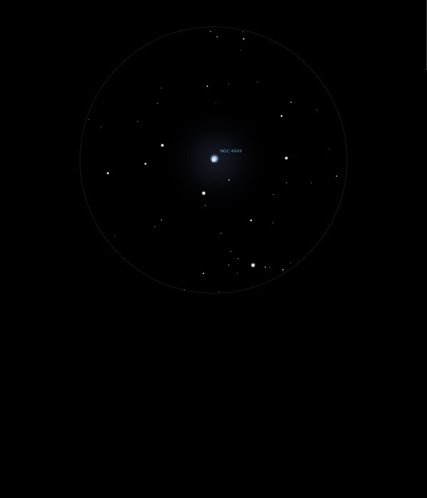

NGC 4449

Irregular Galaxy in Canes Venatici
NGC 4449
Mag 10.0
Caldwell 21
03/07/14
Surely a definite Cigar shape, pointed towards the Mag 9.75 star a quarter of the FOV away in 12mm
A streak in 25mm and really good if faint